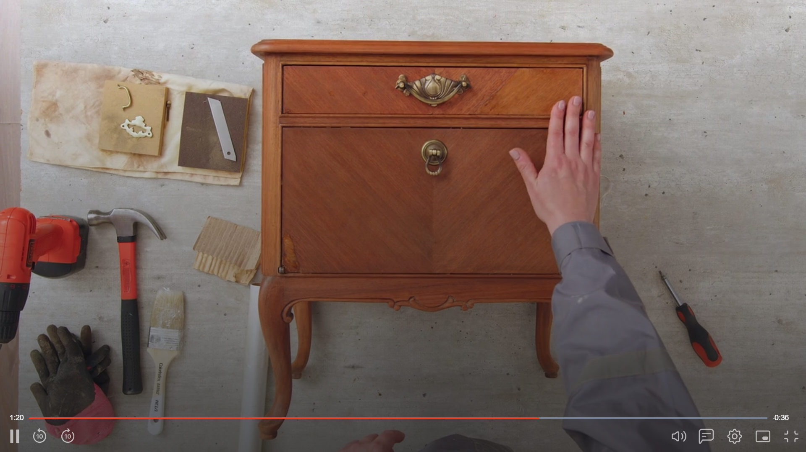
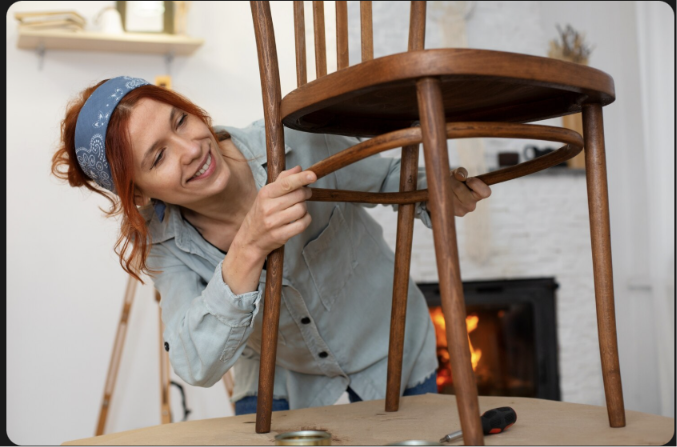

Cursos

Curso de restauración de muebles de madera desde 0
Aprendé las bases de la restauración: preparación, pintura y terminación paso a paso.
Inscribirse →
Técnicas Avanzadas de Restauración
Dominá técnicas profesionales para dar nueva vida a muebles dañados y lograr resultados de calidad.
Inscribirse →
Curso de restauración de muebles de madera
Para quienes ya conocen las bases y quieren avanzar hacia proyectos más desafiantes con autonomía.
Inscribirse →